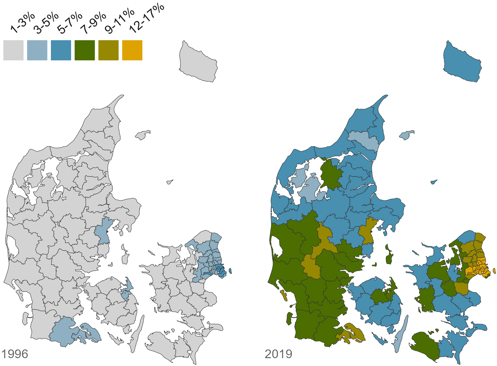
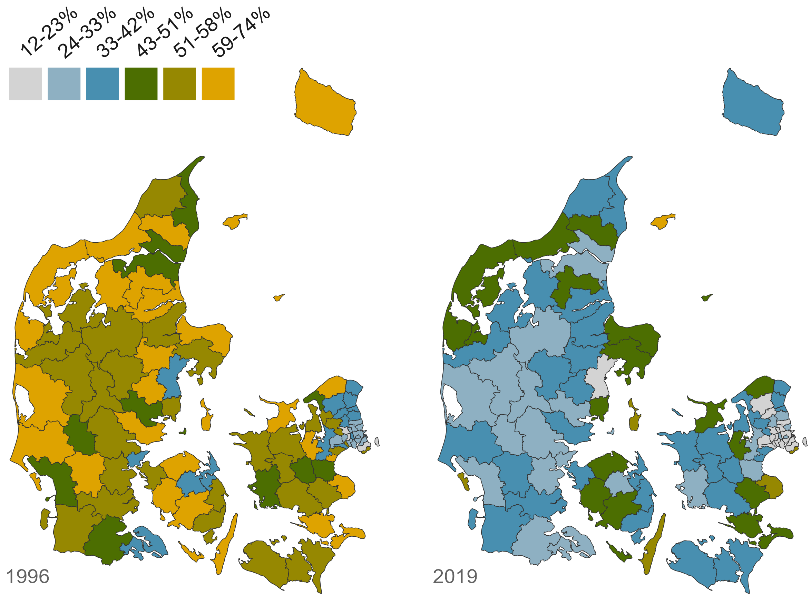
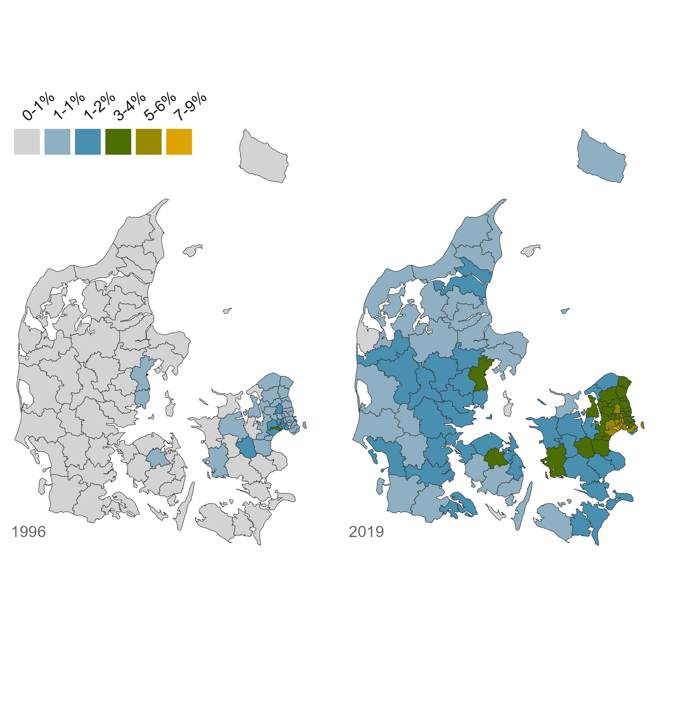
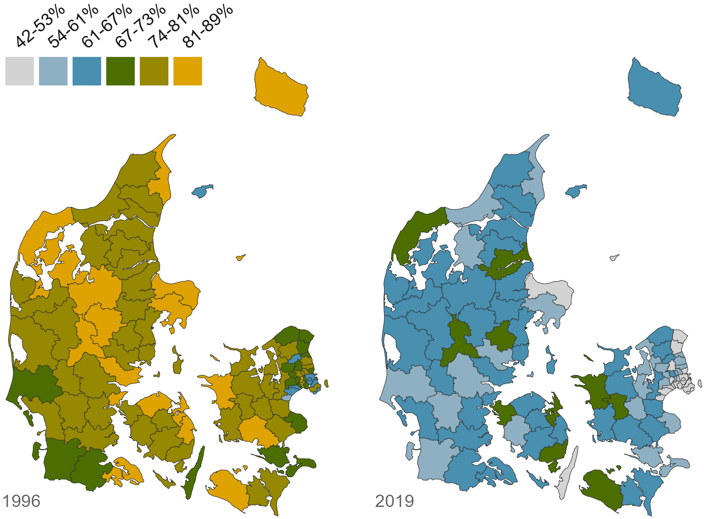
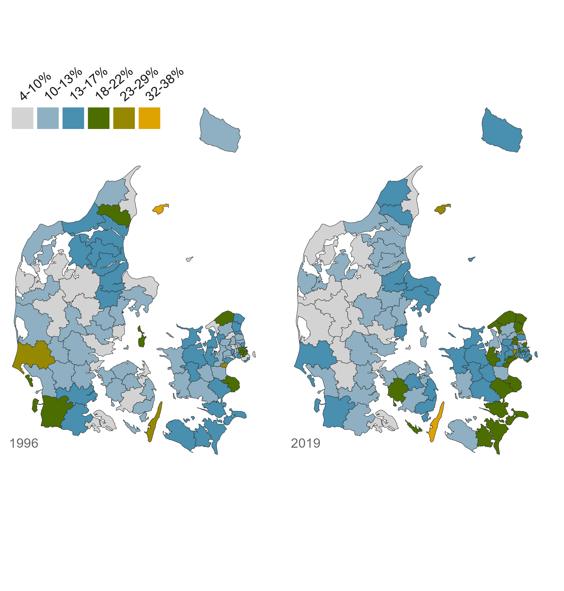

5 Arbejdspladser som mødested
Christian Albrekt Larsen, Laciné E. N. Diop og Jeppe Fjeldgaard Qvist

Indvandrernes og efterkommerens succes, eller manglende succes, på arbejdsmarkedet har været centralt i både politiske og akademiske diskussioner. Med god ret, da økonomiske ressourcer er centralt for at skabe gode liv for indvandrere og deres efterkommere. Men ansigt-til-ansigt interaktionen på arbejdspladserne er også centralt for at opbygge sociale relationer og nedbryde eventuelle fordomme på tværs af etniske skel, se kapitel 1 og kapitel 6. Arbejdspladserne har således ikke bare potentiel til at forandre indvandrere og efterkommere. De har også potentiale til at forandre majoriteten.
Arbejdspladser er en mødeplads, hvor majoritet og minoriteter interagerer intensivt med hinanden, jævnfør kapitel 1, selvom man ikke bor sammen eller har børn der går i skole sammen. En række studier har fundet sammenhæng mellem den etniske komposition af arbejdssteder og sociale relationer og fravær af etniske fordomme (Andersson & Dehdari, 2021; Frølund Thomsen, 2012; Kokkonen et al., 2015; Mancini et al., 2018; Mutz & Mondak, 2006; Pagotto et al., 2010; Rydgren et al., 2013; Vassou et al., 2017).
I dette kapitel beskrives, hvor meget majoritet og minoritet er eksponeret overfor hinanden på arbejdspladsen. Kapitlet er opdelt i fem afsnit. I den første afsnit beskriver vi hvordan vi har regnet på arbejdspladsen som et mødested. Dernæst beskriver vi resultaterne for majoritetens eksportering til indvandrere/efterkommere. Afsnit to beskriver den gennemsnitlige eksponering, mens afsnit tre beskriver andel af majoriteten, der ikke eksponeres for én eneste indvandrere/efterkommer på deres arbejdsplads. Afsnit tre og fire laver samme beskrivelse, set fra minoritetens synsvinkel. Endeligt opsummeres kort i det sidste afsnit.
5.1 Den etniske sammensætning af arbejdspladser
Den etniske sammensætning af arbejdspladser er ret ubeskrevet både nationalt og internationalt.18 Men de opgørelser der findes, hæfter sig normalt ved en stærk etnisk opdeling af arbejdsmarkedet. I den amerikanske assimileringslitteratur har man ikke haft datamaterialet til at lave detaljerede beskrivelser af den etniske komposition af arbejdspladser.19 I en europæisk kontekst viser et svensk studie, at majoritetsbefolkningen og indvandrere og efterkommere i perioden fra 1985 til 2001 blev mere ulige fordelt på arbejdspladser; målt som større sandsynlighed for at være eksponeret for sin egen gruppe på arbejdspladsen. Det gælder efter, at man har taget højde for forandringer i gruppestørrelse og en række andre forhold (Åslund & Skans, 2010). Et tysk studie viser ligeledes, at den etniske sammensætning af arbejdspladser er meget skæv, men dog blev en smule bedre i perioden fra 1980 til 2008 (Glitz, 2014, p. 2014).
Diop-Christensen & Larsen (2024) har lavet et nyligt studie af sammensætningen i Danmark, hvilket er udgangspunkt for dette kapitel. De danske registrer gør det muligt at sammenkøre data om personers herkomst, se kapitel 3, med Danmark Statistisks klassifikation af såkaldte arbejdssteder. Sidstnævnte er produktionsenheder, der er afgrænset til én fysisk adresse. Det er vigtigt da store virksomheder som fx Arla og Novo Nordisk har mange arbejdssteder i og udenfor Danmark. Diop & Larsen (2024) starter opgørelsen i 1996, da det er det første år, hvor Danmarks Statistik har opgjort den type af job, som en person er beskæftiget i (DISKO-klassifikation). Det er vigtigt, da man godt kan forestille sig arbejdspladser, hvor indvandrere og efterkommere varetager funktioner, som majoriteten ikke varetager.
Diop-Christensen & Larsen (2024) finder, at det danske arbejdsmarked i perioden fra 1996 til 2019 er blevet mere segregeret; målt med et såkaldt justeret Dissimilarity Index (\(D\)) (se kapitel 4 eller Bilag A). Deres estimat er, at segregeringen blev målt som \(D\) = 0,21 i 1996. Tolkningen af dette er, at i 1996 skulle man flytte 21 procent af alle beskæftigede indvandrere/efterkommere, eller 21 procent af alle beskæftigede med dansk-dansk herkomst (to danske forældre, se kapitel 3) til en arbejdsplads med hhv. lavere eller højere andel beskæftigede med indvandrerbaggrund for at få en fordeling, der matcher resultatet fra en tilfældig fordeling af de to grupper på alle danske arbejdspladser. I 2019 er den andel vokset til 33 procent (\(D\) = 0,33). I tråd med andre analyser indikerer resultatet en stigende etniske segmentering af det danske arbejdsmarked.
Koncentration af indvandrere, typisk i de manuelle jobs, betyder imidlertid ikke, at arbejdspladser er blevet mindre relevante for mødet mellem majoriteten og etniske minoriteter. Tværtimod viser Diop-Christensen & Larsen (2024), at samtidigt med, at arbejdsmarkedet segregeres, så stiger sandsynligheden for, at majoriteten arbejder på en arbejdsplads med indvandrere og efterkommere.
Figur 5.1 illustrerer, hvorledes Diop-Christensen & Larsen (2024) beregner eksponering til ud-gruppen på arbejdssteder for de beskæftigede. Målet for eksponering kan variere mellem 0, hvor ingen andre på arbejdspladsen tilhører den ”anden” gruppe (majoritet/minoriteter), og 100 procent, hvor alle andre på arbejdspladsen tilhører den ”anden” gruppe (majoritet/minoriteter).
Figur 5.1: Illustration af eksponering på arbejdspladsen.

Arbejdsplads A i figur 5.1 er en illustration på, hvordan en hypotetisk arbejdsplads med 20 beskæftigede med dansk-dansk herkomst som ikke er eksponeret for én eneste indvandrer eller efterkommer på deres arbejdsplads, dvs. eksponeringen er \(0\). På arbejdsplads B i figur 5.1 er seks af de 20 ansatte indvandrere eller efterkommere. Dermed er en person med dansk-dansk herkomst eksponeret til 6 personer fra ”den anden” gruppe. Det svarer til 32 procent, hvilket vi betegner graden af eksponering.20 Omvendt er en indvandrer/efterkommer eksponeret til 14 med dansk-dansk herkomst og 5 fra sin indgruppe, svarende til en eksponering på \(\approx\) 74 procent.
Eksponering kan således tolkes som sandsynligheden for, at den næste man interagerer med på arbejdspladsen, er en fra den modsatte gruppe. Arbejdsplads B er et eksempel på det typiske forhold, at indvandrere og efterkommere har større sandsynlighed for at blive eksponeret for den modsatte gruppe end det er tilfælde for majoritetsgruppen.
Arbejdsplads C i figur 4.1 er en illustration på en situation, hvor arbejdspladsen er meget internt opdelt mellem stillinger, der har forskelligt færdighedsniveauer. Her arbejder de fem medarbejdere med indvandrerbaggrund i det Diop & Larsen (2024) benævner lavt færdighedsniveau.21 Det er typisk ufaglærte jobs, som for eksempel rengøringsarbejde eller andet manuelt arbejde i primære erhverv. På arbejdsplads C er dem med dansk-dansk herkomst i højere interne stillinger, hvilket formentligt gør samarbejdet på tværs af etniske skel mindre sandsynligt og mindre intensivt. Derfor supplerer Diop og Larsens (2024) de generelle eksponeringsmål med et *beskæftigelsesspecifik-eksponeringsmål.22
5.2 Gennemsnitlig eksponering til indvandrere og efterkommere på arbejdspladser
Det stigende antal indvandrere og efterkommere på arbejdsmarkedet fra 1996 til 2019 har bevirket, at størstedelen af beskæftigede med dansk-dansk herkomst er kommet til at arbejde sammen med indvandrere og efterkommere. Der er selvfølgelig stor variation i eksponeringen. Nogle er ikke eksponeret til én eneste indvandrer eller efterkommer på arbejdspladsen, se nedenstående beskrivelse af graden af ”isolation”, mens andre er eksponeret for mange.
Majoritetens gennemsnitlige eksponering til indvandrere og efterkommere på arbejdspladsen giver en god fornemmelse af udviklingen over tid. Diop-Christensen & Larsen (2024) estimerer, at majoritetens gennemsnitlig eksponering er steget fra 3,1 procent i 1996 til 13,3 procent i 2019.
I figur 5.2 er den gennemsnitlig eksponering opdelt på kommunalt niveau. I 1996, kortet placeret til venstre i figur 5.2, var det kun i hovedstadsområdet, Aarhus og enkelte grænselandskommuner, at det var typisk at være eksponeret til 3–7 procent indvandrere/efterkommere på arbejdspladsen (markeret med blåt). I 2019, kortet placeret til højre i figur 5.2, ser situationen helt anderledes ud. I alle kommuner er det nu normalen, at majoriteten er eksponeret til 3–7 procent indvandrere/efterkommere på deres arbejdsplads. I store del af landet ligger den gennemsnitlige eksponering nu over 7 procenter, markeret med gullige/grønlige farver.
Figur 5.2: Beskæftigedes med dansk-dansk herkomst gennemsnitlige eksponering til indvandrere/efterkommere på deres arbejdspladsen i 1996 (venstre) og 2019 (højre).
Note: Opgjort på tværs af kommuner.
Dette billede af stigende eksponering af de beskæftigede med dansk-dansk herkomst kan nuanceres på mange forskellige måder. For gruppen af majoriteten beskæftiget i stillinger med lavt færdighedsniveau er den gennemsnitlige eksponering cirka to procentpoint højere i 2019, når der måles på beskæftigelsesspecifik eksponering, frem for generel eksponering. Det gør således en forskel, hvordan man måler, men det rykker ikke ved det overordnet billede.
Mere interessant er det måske, hvor meget majoriteten på deres arbejdsplads er blevet eksponeret til indvandrere og efterkommere med muslimsk baggrund. Diop-Christensen & Larsen (2024) estimerer, at de beskæftigede med dansk-dansk herkomst (gennemsnitlige) eksponering til MENAPT-indvandrere/efterkommere på arbejdspladsen i 1996 var 0,6 procent. Den (gennemsnitlige) eksponering er i 2019 steget til 2,5 procent. Den mindre eksponering til muslimske minoriteter skyldes primært, at der er tale om en mindre gruppe, men det skyldes også en koncentration af muslimske minoriteter i de store bykommuner, hvilket illustreres i figur 5.3.
I 1996, det venstre kort i figur 5.3, var det kun på Sjælland, i Odense og Aarhus, at det var typisk, at majoriteten var eksponeret til en til to procent indvandrere/efterkommere fra MENAPT-lande på deres arbejdsplads. Markeret med blå farver. I 2019, det højre kort, er det nu typisk i hele landet at have et sådant eksponeringsniveau til muslimske minoriteter, med undtagelse af Lemvig kommune. Men det stadigt tydeligt, at eksponering til minoriteter fra muslimske oprindelseslande er højst omkring hovedstadsregionen, Odense og Aarhus, se gullige og grønlige farver i figur 5.3.
Figur 5.3: Andelen af beskæftigede med dansk-dansk herkomst, der ikke er eksponeret til én eneste indvandrer eller efterkommer på deres arbejdsplads i 1996 (venstre) og 2019 (højre).
Note: Opgjort på tværs af kommuner.
5.3 Majoritetens ”isolation” fra minoriteterne
En anden måde at opgøre det på, er at se på andelen af beskæftigede med dansk-dansk herkomst, der ikke har én eneste indvandrere eller efterkommere på deres arbejdsplads. En sådan ”isolation” er selvfølgelig langt mere sandsynlig på små end på store arbejdspladser. Ikke desto mindre giver andelen med nul-eksponering også en god fornemmelse af forandringer over tid. Diop-Christensen & Larsen (2024) estimerer, at andelen af beskæftigede med dansk-dansk herkomst, som er ”isolerede” på deres arbejdsplads er faldet fra 45 procent i 1996 til 29 procent i 2019.
Figur 5.4: Beskæftigedes med dansk-dansk herkomst gennemsnitlige eksponering til MENAPT indvandrere/efterkommer på deres arbejdsplads i 1996 (venstre) og 2019 (højre).
Note: Opgjort på tværs af kommuner.
I figur 5.4 er ”isolationen” opdelt på tværs af kommunerne. Andelen med nul-eksponering er faldet i stort set hele landet. I 1996, det venstre kort i figur 5.4, var situationen i største parten af landet, at 43 procent eller flere, af de beskæftigede fra majoriteten, i en given kommune, ikke arbejdede sammen med en eneste indvandrer eller efterkommer. Det er markeret med gullige og grønlige farver i figuren. I 2019 ser situationen helt anderledes ud. I størsteparten af landet er det nu atypisk at have så mange ”isolerede” i en kommune, se figur 5.4.
5.4 Minoriteters eksponering til majoritetsbefolkningen
Beskæftigede indvandrere og efterkommere er i høj grad eksponeret til beskæftigede med dansk-dansk herkomst på deres arbejdsplads. Diop-Christensen & Larsen (2024) estimerer, at den gennemsnitlige eksponering var 74 procent i 1996. Opdelt på kommuner viser den venstre del af figur 5.5, at den (gennemsnitlige) høje eksponering til majoritetsbefolkningen i 1996 gjorde sig gældende i hele landet. Med undtagelse af et par enkelte kommuner i hovedstadsområdet var den gennemsnitlige eksponering på 67 procent eller derover. Det er markeret med grønlige og gullige farver i figur 5.5.
Figur 5.5: Beskæftigede indvandreres/efterkommeres gennemsnitlige eksponering til beskæftigede med dansk-dansk herkomst på deres arbejdsplads i 1996 (venstre) og 2019 (højre).
Note: Opgjort på tværs af kommuner.
Efterhånden som der kommer flere og flere indvandrere og efterkommere ind på arbejdspladserne, så falder den gennemsnitlige eksponering til beskæftigede med dansk-dansk herkomst. Diop-Christensen & Larsen (2024) estimerer, at den (gennemsnitlige) eksponering i 2019 er 57 procent. I den nederste del af 5.5 ses den eksponeringen på tværs af beskæftigede bosat i forskellige kommuner. Den lysere farve indikerer, at eksponeringen falder. Det er dog værd at bemærke, at eksponeringen til kolleger med dansk-dansk herkomst stadig er højere end eksponeringen til indvandrere og efterkommere på arbejdspladsen. Det typiske er således fortsat, at indvandrere og efterkommere har større sandsynlighed for at arbejde sammen med en fra majoriteten end en med minoritetsbaggrund.
5.5 Minoriteters ”isolation” fra majoritetsbefolkningen
Ligesom for majoriteten, beregner Diop-Christensen & Larsen (2024) også andelen af beskæftigede indvandrere og efterkommere, der ikke er eksponeret til én eneste med dansk-dansk herkomst. Andelen af minoriteter i ”isolation” er markant mindre end det er tilfældet for majoriteten. Studiet estimerer andelen af ”isolerede” indvandrere/efterkommere til at være 13 procent i 1996 og 14 procent i 2019. Fra 1996 til 2019 er der således stort set ikke sket nogen stigning i andelen af indvandrere/efterkommere, der arbejder på en arbejdsplads, der ikke minimum er én ansat fra majoriteten.
I figur 5.6 vises andelen af ”isolerede” på tværs af kommuner i 1996 (venstre) og 2019 (højre). I 1996, det venstre kort, var der ikke noget klart mønster i, hvor der 18 procent eller flere ”isolerede”; markeret med grøn og gullige farver. I 2019, det højre kort, viser det sig, en højre andel ”isolerede” udelukkende forekommer på Sjælland og Fyn, men det er ikke et klart mønster.
Figur 5.6: Andelen af beskæftigede indvandrere/efterkommere der ikke er eksponeret til én eneste med dansk-dansk herkomst på deres arbejdsplads i 1996 (venstre) og 2019 (højre).
Note: Opgjort på tværs af kommuner.
For indvandrere og efterkommere ansat i stillinger, der kræver lavt færdighedsniveau, er eksponeringen til gruppen med dansk-dansk herkomst mindre. Diop-Christensen & Larsen (2024) estimerer, at gruppen beskæftigelsesspecifikke eksponering i 2019 er på 37 procent, hvilket er markant mindre end for den samlede gruppe af indvandrere og efterkommere. Endeligt er gruppen fra MENAPT-lande generelt en smule mindre eksponeret til kolleger med dansk-dansk-herkomst end indvandrere og efterkommere generelt. I 1996 var den gennemsnitlige eksponering 60 procent, hvilket i 2019 var faldet til 55 procent.23
5.6 Arbejdspladsen som mødested
I kapitlet og i det underliggende studie (Diop-Christensen & Larsen, 2024) har vi vist, at forholdene på det danske arbejdsmarked forandres i takt med den etniske diversitet i befolkningen. Det har givet et mere opdelt arbejdsmarked, hvor indvandrere og efterkommere, ligesom i andre lande, ofte ender med at tage de hårdeste og mest usikre jobs, mens majoritetsbefolkningen ender i bedre beskæftigelse. Men på trods af disse segmenteringstendenser har vi også vist, at arbejdspladserne er blevet et centralt sted, hvor store dele af majoritetsbefolkningen eksponeres for både vestlige og ikke-vestlige indvandrere. Det gør sig ikke kun gældende i byerne. Det opleves i hele landet. Og vi har vist, at arbejdspladserne fortsat er et sted, hvor beskæftigede indvandrere og efterkommere typisk interagerer med kolleger med dansk-dansk herkomst.
Det stigende antal ansigt-til-ansigt møder mellem majoriteten og minoriteter på arbejdspladserne skaber et potentiale for flere tværetniske sociale relationer og færre fordomme på tværs af grupperne. Et sådant sammenfald er da også vist i tidligere studier, se indledningen. Men opfølgende studier, der har anvendt ovenstående eksponeringsdata, viser, at interaktionen på arbejdspladser ikke altid fører til bedre relationer mellem majoritet og minoriteter. Det diskuterer vi nærmere i det afsluttende kapitel 7.
Den internationale litteratur har i stedet særligt fokuseret på etnisk segregering mellem brancher og virksomheder (der kan bestå af flere arbejdssteder).↩︎
Men i forlængelse af borgerrettighedsbevægelsen i 1960erne blev alle arbejdspladser med \(100\) ansatte og derover dog forpligtet til at indrapportere den racemæssige komposition af amerikanske arbejdspladser. Disse data viser, at afroamerikanernes større succes på det amerikanske arbejdsmarked ikke omsætter sig til mere racemæssig diversitet på arbejdspladsen. Tværtimod har segregering været stigende på tværs af racer i USA (Hellerstein et al., 2008).↩︎
I eksemplet er gruppen med dansk-dansk herkomst eksponeret til \(13\) fra egen gruppe—det samlede antal minus personen selv—eller \(\approx\) 74 procent, hvilket kan betegnes som grade af isolation (Bell (1954), se Bilag A).↩︎
DISKO-klassifikation 9, i Danmarks Statistiks registrer.↩︎
Det vil sige eksponeringen indenfor faglighedsniveauer på de enkelte arbejdspladser. På arbejdsplads C vil det mål være 0 for begge grupper, da hverken dem med dansk-dansk herkomst eller indvandrerne/efterkommerne er eksponeret for den anden gruppe i den samme beskæftigelsesgruppe. På Arbejdsplads B derimod, er indvandrere/efterkommere i stillinger med lavt faglighedsniveau eksponeret for tre fra majoriteten og to andre minoriteter, hvilket giver en beskæftigelsesspecifik eksponering på 60 procent, hvilket er lavere end eksponering udregnet på baggrund af hele arbejdsstedet (74%). En beskæftiget med dansk-dansk herkomst i en stilling med lavt faglighedsniveau på arbejdsplads B har ligeledes en beskæftigelsesspecifik eksponering på 60 procent, hvilket er højere end eksponeringsgraden udregnet på baggrund af hele arbejdsstedet (32%). Diop & Larsen (2024) viser, at den generelle og beskæftigelsesspecifikke eksponering varierer for det begrænsede antal i stillinger med lavt faglighedsniveau, typisk ufaglærte jobs, mens forskellene er ubetydelige for det samlede arbejdsmarkedet. Derfor anvender vi i det kapitel primært det simple mål for eksponering på arbejdspladsen. Beregninger på Løsø kommune er meget usikre pga. et meget begrænset antal indvandrere/efterkommere.↩︎
Andelen af beskæftigede MENAPT-indvandrere/efterkommere, der ikke har en kollega med dansk-dansk herkomst estimeres til 24 procent i 1996, hvilket i 2019 er faldet til 20 procent. Mønstret er således, at mens dele af majoriteten ikke eksponeres til MENAPT-indvandrere/efterkommere på deres arbejdsplads, så det er atypisk, hvis beskæftigede MENAPT-indvandrere/efterkommere ikke eksponeres til majoriteten på deres arbejdsplads.↩︎